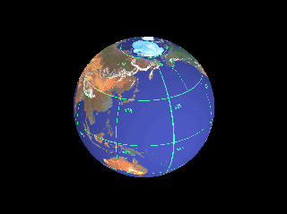

Below is an animated GIF of the map from the previous page wrapped around a sphere. The graphic was generated as a series of graphic files (one per animation frame) using POV-Ray, then quantized to 256 colors using ppmquantall from the NetPBM package, and assembled into an animated GIF with Gifsicle.
You may notice a vertical line in the Northern Hemisphere, in the Pacific, between Siberia and Canada. This is an artifact in the graphic; it's the joining line for the left and right edges of the map. I hope to produce a version without this line sometime in the indefinite future.
Steve Edwards pointed out that I had the Earth spinning the wrong way -- east to west. I don't know how I missed that, but it's been fixed. Thanks, Steve!
|  |
Return to "Earth as
a Size 5 World"
Return to Universe
pages
Return to Jim Goltz's home page